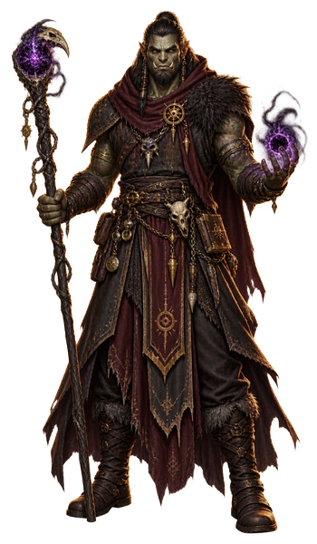

Warlock¶
Somewhere past the ordinary rules of magic sits a warlock's patron; what that deal cost is nobody else's business. Invocations are doors that shouldn't exist, forced open once and left unlocked—no study, just payment made. The fine print stays private. What shows is the confidence of someone who no longer asks.

- Hit die
- D8 per Warlock level
- Primary ability
- Charisma
- Saving throws
- Wisdom, Charisma
- Armor training
- Light armor
- Weapons
- Simple weapons
- Starting equipment
- Choose A or B: (A) Leather Armor, Sickle, 2 Daggers, Arcane Focus (orb), Book (occult lore), Scholar’s Pack, and 15 GP; or (B) 100 GP
| Level | Proficiency Bonus |
Class Features |
Eldritch Invocations |
Cantrips | Prepared Spells |
Spell Slots |
Slot Level |
Skill Points | ||
|---|---|---|---|---|---|---|---|---|---|---|
| Free Points |
Bound Skills |
Bound Tools |
||||||||
| 1 | +2 | Eldritch Invocations, Pact Magic | 1 | 2 | 2 | 1 | 1 | 10 | 2 | 0 |
| 2 | +2 | Magical Cunning | 3 | 2 | 3 | 2 | 1 | 10 | 2 | 0 |
| 3 | +2 | Warlock Subclass | 3 | 2 | 4 | 2 | 2 | 10 | 2 | 0 |
| 4 | +2 | Ability Score Improvement | 3 | 3 | 5 | 2 | 2 | 12 | 2 | 0 |
| 5 | +3 | — | 5 | 3 | 6 | 2 | 3 | 12 | 2 | 0 |
| 6 | +3 | Subclass feature | 5 | 3 | 7 | 2 | 3 | 12 | 2 | 0 |
| 7 | +3 | — | 6 | 3 | 8 | 2 | 4 | 12 | 2 | 0 |
| 8 | +3 | Ability Score Improvement | 6 | 3 | 9 | 2 | 4 | 14 | 2 | 0 |
| 9 | +4 | Contact Patron | 7 | 3 | 10 | 2 | 5 | 14 | 2 | 0 |
| 10 | +4 | Subclass feature | 7 | 4 | 10 | 2 | 5 | 14 | 2 | 0 |
| 11 | +4 | Mystic Arcanum (level 6 spell) | 7 | 4 | 11 | 3 | 5 | 14 | 2 | 0 |
| 12 | +4 | Ability Score Improvement | 8 | 4 | 11 | 3 | 5 | 16 | 2 | 0 |
| 13 | +5 | Mystic Arcanum (level 7 spell) | 8 | 4 | 12 | 3 | 5 | 16 | 2 | 0 |
| 14 | +5 | Subclass feature | 8 | 4 | 12 | 3 | 5 | 16 | 2 | 0 |
| 15 | +5 | Mystic Arcanum (level 8 spell) | 9 | 4 | 13 | 3 | 5 | 16 | 2 | 0 |
| 16 | +5 | Ability Score Improvement | 9 | 4 | 13 | 3 | 5 | 18 | 2 | 0 |
| 17 | +6 | Mystic Arcanum (level 9 spell) | 9 | 4 | 14 | 4 | 5 | 18 | 2 | 0 |
| 18 | +6 | — | 10 | 4 | 14 | 4 | 5 | 18 | 2 | 0 |
| 19 | +6 | Epic Boon | 10 | 4 | 15 | 4 | 5 | 18 | 2 | 0 |
| 20 | +6 | Eldritch Master | 10 | 4 | 15 | 4 | 5 | 20 | 2 | 0 |
The last three columns are Fate's Hand. They show your running total at that level, not the gain — you keep every step you passed through.
Level 1: Eldritch Invocations
You have unearthed Eldritch Invocations, pieces of forbidden knowledge that imbue you with an abiding magical ability or other lessons. You gain one invocation of your choice, such as Pact of the Tome. Invocations are described in the “Eldritch Invocation Options” section later in this class’s description.
Prerequisites. If an invocation has a prerequisite, you must meet it to learn that invocation. For example, if an invocation requires you to be a level 5+ Warlock, you can select the invocation once you reach Warlock level 5.
Replacing and Gaining Invocations. Whenever you gain a Warlock level, you can replace one of your invocations with another one for which you qualify. You can’t replace an invocation if it’s a prerequisite for another invocation that you have.
When you gain certain Warlock levels, you gain more invocations of your choice, as shown in the Invocations column of the Warlock Features table.
You can’t pick the same invocation more than once unless its description says otherwise.
Level 1: Pact Magic
Through occult ceremony, you have formed a pact with a mysterious entity to gain magical powers. The entity is a voice in the shadows—its identity unclear—but its boon to you is concrete: the ability to cast spells. See “Spells” for the rules on spellcasting. The information below details how you use those rules with Warlock spells, which appear in the Warlock spell list later in the class’s description.
Cantrips. You know two Warlock cantrips of your choice. Eldritch Blast and Prestidigitation are recommended. Whenever you gain a Warlock level, you can replace one of your cantrips from this feature with another Warlock cantrip of your choice.
When you reach Warlock levels 4 and 10, you learn another Warlock cantrip of your choice, as shown in the Cantrips column of the Warlock Features table.
Spell Slots. The Warlock Features table shows how many spell slots you have to cast your Warlock spells of levels 1–5. The table also shows the level of those slots, all of which are the same level. You regain all expended Pact Magic spell slots when you finish a Short or Long Rest.
For example, when you’re a level 5 Warlock, you have two level 3 spell slots. To cast the level 1 spell Charm Person, you must spend one of those slots, and you cast it as a level 3 spell.
Prepared Spells of Level 1+. You prepare the list of level 1+ spells that are available for you to cast with this feature. To start, choose two level 1 Warlock spells. Charm Person and Hex are recommended.
The number of spells on your list increases as you gain Warlock levels, as shown in the Prepared Spells column of the Warlock Features table. Whenever that number increases, choose additional Warlock spells until the number of spells on your list matches the number in the table. The chosen spells must be of a level no higher than what’s shown in the table’s Slot Level column for your level. When you reach level 6, for example, you learn a new Warlock spell, which can be of levels 1–3.
If another Warlock feature gives you spells that you always have prepared, those spells don’t count against the number of spells you can prepare with this feature, but those spells otherwise count as Warlock spells for you.
Changing Your Prepared Spells. Whenever you gain a Warlock level, you can replace one spell on your list with another Warlock spell of an eligible level.
Spellcasting Ability. Charisma is the spellcasting ability for your Warlock spells.
Spellcasting Focus. You can use an Arcane Focus as a Spellcasting Focus for your Warlock spells.
Level 2: Magical Cunning
You can perform an esoteric rite for 1 minute. At the end of it, you regain expended Pact Magic spell slots but no more than a number equal to half your maximum (round up). Once you use this feature, you can’t do so again until you finish a Long Rest.
Level 3: Warlock Subclass
You gain a Warlock subclass of your choice. The Fiend Patron subclass is detailed after this class’s description. A subclass is a specialization that grants you features at certain Warlock levels. For the rest of your career, you gain each of your subclass’s features that are of your Warlock level or lower.
Level 4: Ability Score Improvement
You gain the Ability Score Improvement feat (see “Feats”) or another feat of your choice for which you qualify. You gain this feature again at Warlock levels 8, 12, and 16.
Level 9: Contact Patron
In the past, you usually contacted your patron through intermediaries. Now you can communicate directly; you always have the Contact Other Plane spell prepared. With this feature, you can cast the spell without expending a spell slot to contact your patron, and you automatically succeed on the spell’s saving throw.
Once you cast the spell with this feature, you can’t do so in this way again until you finish a Long Rest.
Level 11: Mystic Arcanum
Your patron grants you a magical secret called an arcanum. Choose one level 6 Warlock spell as this arcanum.
You can cast your arcanum spell once without expending a spell slot, and you must finish a Long Rest before you can cast it in this way again.
As shown in the Warlock Features table, you gain another Warlock spell of your choice that can be cast in this way when you reach Warlock levels 13 (level 7 spell), 15 (level 8 spell), and 17 (level 9 spell). You regain all uses of your Mystic Arcanum when you finish a Long Rest.
Whenever you gain a Warlock level, you can replace one of your arcanum spells with another Warlock spell of the same level.
Level 19: Epic Boon
You gain an Epic Boon feat (see “Feats”) or another feat of your choice for which you qualify. Boon of Fate is recommended.
Level 20: Eldritch Master
When you use your Magical Cunning feature, you regain all your expended Pact Magic spell slots.
Eldritch Invocation Options
Agonizing Blast
Prerequisite: Level 2+ Warlock, a Warlock Cantrip That Deals Damage
Choose one of your known Warlock cantrips that deals damage. You can add your Charisma modifier to that spell’s damage rolls.
Repeatable. You can gain this invocation more than once. Each time you do so, choose a different eligible cantrip.
Armor of Shadows
You can cast Mage Armor on yourself without expending a spell slot.
Ascendant Step
Prerequisite: Level 5+ Warlock
You can cast Levitate on yourself without expending a spell slot.
Devil’s Sight
Prerequisite: Level 2+ Warlock
You can see normally in Dim Light and Darkness— both magical and nonmagical—within 120 feet of yourself.
Devouring Blade
Prerequisite: Level 12+ Warlock, Thirsting Blade Invocation
The Extra Attack of your Thirsting Blade invocation confers two extra attacks rather than one.
Eldritch Mind
You have Advantage on Constitution saving throws that you make to maintain Concentration.
Eldritch Smite
Prerequisite: Level 5+ Warlock, Pact of the Blade Invocation
Once per turn when you hit a creature with your pact weapon, you can expend a Pact Magic spell slot to deal an extra 1d8 Force damage to the target, plus another 1d8 per level of the spell slot, and you can give the target the Prone condition if it is Huge or smaller.
Eldritch Spear
Prerequisite: Level 2+ Warlock, a Warlock Cantrip That Deals Damage
Choose one of your known Warlock cantrips that deals damage and has a range of 10+ feet. When you cast that spell, its range increases by a number of feet equal to 30 times your Warlock level.
Repeatable. You can gain this invocation more than once. Each time you do so, choose a different eligible cantrip.
Fiendish Vigor
Prerequisite: Level 2+ Warlock
You can cast False Life on yourself without expending a spell slot. When you cast the spell with this feature, you don’t roll the die for the Temporary Hit Points; you automatically get the highest number on the die.
Gaze of Two Minds
Prerequisite: Level 5+ Warlock
You can use a Bonus Action to touch a willing creature and perceive through its senses until the end of your next turn. As long as the creature is on the same plane of existence as you, you can take a Bonus Action on subsequent turns to maintain this connection, extending the duration until the end of your next turn. The connection ends if you don’t maintain it in this way.
While perceiving through the other creature’s senses, you benefit from any special senses possessed by that creature, and you can cast spells as if you were in your space or the other creature’s space if the two of you are within 60 feet of each other.
Gift of the Depths
Prerequisite: Level 5+ Warlock
You can breathe underwater, and you gain a Swim Speed equal to your Speed.
You can also cast Water Breathing once without expending a spell slot. You regain the ability to cast it in this way again when you finish a Long Rest.
Gift of the Protectors
Prerequisite: Level 9+ Warlock, Pact of the Tome Invocation
A new page appears in your Book of Shadows when you conjure it. With your permission, a creature can take an action to write its name on that page, which can contain a number of names equal to your Charisma modifier (minimum of one name).
When any creature whose name is on the page is reduced to 0 Hit Points but not killed outright, the
creature magically drops to 1 Hit Point instead. Once this magic is triggered, no creature can benefit from it until you finish a Long Rest.
As a Magic action, you can erase a name on the page by touching it.
Investment of the Chain Master
Prerequisite: Level 5+ Warlock, Pact of the Chain Invocation
When you cast Find Familiar, you infuse the summoned familiar with a measure of your eldritch power, granting the creature the following benefits.
Aerial or Aquatic. The familiar gains either a Fly Speed or a Swim Speed (your choice) of 40 feet.
Quick Attack. As a Bonus Action, you can command the familiar to take the Attack action.
Necrotic or Radiant Damage. Whenever the familiar deals Bludgeoning, Piercing, or Slashing damage, you can make it deal Necrotic or Radiant damage instead.
Your Save DC. If the familiar forces a creature to make a saving throw, it uses your spell save DC.
Resistance. When the familiar takes damage, you can take a Reaction to grant it Resistance against that damage.
Lessons of the First Ones
Prerequisite: Level 2+ Warlock
You have received knowledge from an elder entity of the multiverse, allowing you to gain one Origin feat of your choice (see “Feats”).
Repeatable. You can gain this invocation more than once. Each time you do so, choose a different Origin feat.
Lifedrinker
Prerequisite: Level 9+ Warlock, Pact of the Blade Invocation
Once per turn when you hit a creature with your pact weapon, you can deal an extra 1d6 Necrotic, Psychic, or Radiant damage (your choice) to the creature, and you can expend one of your Hit Point Dice to roll it and regain a number of Hit Points equal to the roll plus your Constitution modifier (minimum of 1 Hit Point).
Mask of Many Faces
Prerequisite: Level 2+ Warlock
You can cast Disguise Self without expending a spell slot.
Master of Myriad Forms
Prerequisite: Level 5+ Warlock
You can cast Alter Self without expending a spell slot.
Misty Visions
Prerequisite: Level 2+ Warlock
You can cast Silent Image without expending a spell slot.
One with Shadows
Prerequisite: Level 5+ Warlock
While you’re in an area of Dim Light or Darkness, you can cast Invisibility on yourself without expending a spell slot.
Otherworldly Leap
Prerequisite: Level 2+ Warlock
You can cast Jump on yourself without expending a spell slot.
Pact of the Blade
As a Bonus Action, you can conjure a pact weapon in your hand—a Simple or Martial Melee weapon of your choice with which you bond—or create a bond with a magic weapon you touch; you can’t bond with a magic weapon if someone else is attuned to it or another Warlock is bonded with it. Until the bond ends, you have proficiency with the weapon, and you can use it as a Spellcasting Focus.
Whenever you attack with the bonded weapon, you can use your Charisma modifier for the attack and damage rolls instead of using Strength or Dexterity; and you can cause the weapon to deal Necrotic, Psychic, or Radiant damage or its normal damage type.
Your bond with the weapon ends if you use this feature’s Bonus Action again, if the weapon is more than 5 feet away from you for 1 minute or more, or if you die. A conjured weapon disappears when the bond ends.
Pact of the Chain
You learn the Find Familiar spell and can cast it as a Magic action without expending a spell slot.
When you cast the spell, you choose one of the normal forms for your familiar or one of the following special forms: Imp, Pseudodragon, Quasit, Skeleton, Sphinx of Wonder, Sprite, or Venomous Snake (see “Monsters” for the familiar’s stat block).
Additionally, when you take the Attack action, you can forgo one of your own attacks to allow your familiar to make one attack of its own with its Reaction.
Pact of the Tome
Stitching together strands of shadow, you conjure forth a book in your hand at the end of a Short or Long Rest. This Book of Shadows (you determine its appearance) contains eldritch magic that only you can access, granting you the benefits below. The
book disappears if you conjure another book with this feature or if you die.
Cantrips and Rituals. When the book appears, choose three cantrips, and choose two level 1 spells that have the Ritual tag. The spells can be from any class’s spell list, and they must be spells you don’t already have prepared. While the book is on your person, you have the chosen spells prepared, and they function as Warlock spells for you.
Spellcasting Focus. You can use the book as a Spellcasting Focus.
Repelling Blast
Prerequisite: Level 2+ Warlock, a Warlock Cantrip That Deals Damage via an Attack Roll
Choose one of your known Warlock cantrips that requires an attack roll. When you hit a Large or smaller creature with that cantrip, you can push the creature up to 10 feet straight away from you.
Repeatable. You can gain this invocation more than once. Each time you do so, choose a different eligible cantrip.
Thirsting Blade
Prerequisite: Level 5+ Warlock, Pact of the Blade Invocation
You gain the Extra Attack feature for your pact weapon only. With that feature, you can attack twice with the weapon instead of once when you take the Attack action on your turn.
Visions of Distant Realms
Prerequisite: Level 9+ Warlock
You can cast Arcane Eye without expending a spell slot.
Whispers of the Grave
Prerequisite: Level 7+ Warlock
You can cast Speak with Dead without expending a spell slot.
Witch Sight
Prerequisite: Level 15+ Warlock
You have Truesight with a range of 30 feet.
Warlock subclass: Fiend Patron
Make a Deal with the Lower Planes
Your pact draws on the Lower Planes, the realms of perdition. You might forge a bargain with a demon lord, an archdevil, or another fiend that is especially mighty. That patron’s aims are evil—the corruption or destruction of all things, ultimately including you—and your path is defined by the extent to which you strive against those aims.
Level 3: Dark One’s Blessing
When you reduce an enemy to 0 Hit Points, you gain Temporary Hit Points equal to your Charisma modifier plus your Warlock level (minimum of 1 Temporary Hit Point). You also gain this benefit if someone else reduces an enemy within 10 feet of you to 0 Hit Points.
Level 3: Fiend Spells
The magic of your patron ensures you always have certain spells ready; when you reach a Warlock level specified in the Fiend Spells table, you thereafter always have the listed spells prepared.
Fiend Spells
Warlock Level Spells
3 Burning Hands, Command, Scorching Ray, Suggestion
5 Fireball, Stinking Cloud
7 Fire Shield, Wall of Fire
9 Geas, Insect Plague
Level 6: Dark One’s Own Luck
You can call on your fiendish patron to alter fate in your favor. When you make an ability check or a saving throw, you can use this feature to add 1d10 to your roll. You can do so after seeing the roll but before any of the roll’s effects occur.
You can use this feature a number of times equal to your Charisma modifier (minimum of once), but you can use it no more than once per roll. You regain all expended uses when you finish a Long Rest.
Level 10: Fiendish Resilience
Choose one damage type, other than Force, whenever you finish a Short or Long Rest. You have Resistance to that damage type until you choose a different one with this feature.
Level 14: Hurl Through Hell
Once per turn when you hit a creature with an attack roll, you can try to instantly transport the target through the Lower Planes. The target must succeed on a Charisma saving throw against your spell save DC, or the target disappears and hurtles through a nightmare landscape. The target takes 8d10 Psychic damage if it isn’t a Fiend, and it has the Incapacitated condition until the end of your next turn, when it returns to the space it previously occupied or the nearest unoccupied space.
Once you use this feature, you can’t use it again until you finish a Long Rest unless you expend a Pact Magic spell slot (no action required) to restore your use of it. Wizard
What Fate's Hand changes
| Bound skill | Bound tool | Free point pool | Expertise access |
|---|---|---|---|
| 2 | 0 | 10 | lvl 4 |
Your class list — Arcana · Deception · History · Intimidation · Investigation · Nature · Religion, as printed.
This work includes material from the System Reference Document 5.2.1 (“SRD 5.2.1”) by Wizards of the Coast LLC, available at https://www.dndbeyond.com/srd. The SRD 5.2.1 is licensed under the Creative Commons Attribution 4.0 International License, available at https://creativecommons.org/licenses/by/4.0/legalcode.